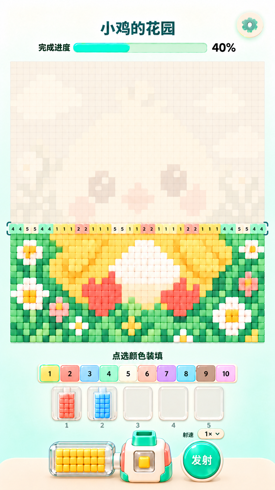
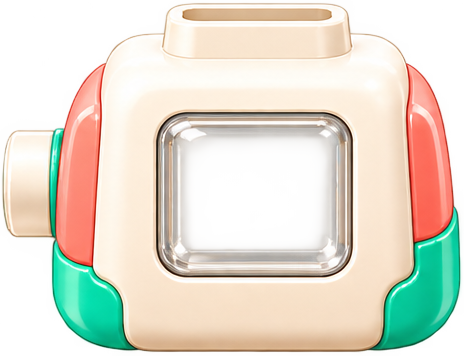
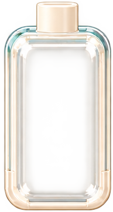
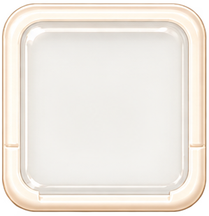

本包以 reference/approved_ui.png 为当前定稿，替代旧包“两侧各5槽”和“一体式锥形枪”方案。这里是设计素材与开发交接，不是已运行的 Cocos 工程。设备按最新截图重绘并拆图，非PSD原始分层；完整小鸡沿用V2补绘原画与示例矩阵，细节并非截图逐像素复刻。
先打开 图片说明.html 看图，再按本文件开发。assets中PNG均独立；asset_manifest.json记录实际像素尺寸与透明通道。


`assets/gun_body_empty.png`：仅枪身，无绿色枪头；正面枪仓留空透明。枪身和侧边接口不参与枪头后坐力。
`assets/gun_muzzle.png`：绿色枪口及下方短颈为独立Sprite，放在枪身后面，短颈藏入顶部底座。发射点随此节点移动。
`assets/magazine_active_empty.png`：横向透明无色空壳，没有彩豆和数量。右侧出口对准枪身左侧接口，连接处小幅重叠。

`assets/magazine_queue_empty.png`：供上方已选颜色排队。内部方豆由程序放入，整组移动到枪旁时转换为横向供豆仓表现。

`assets/queue_slot_empty.png`：横排复用5份，槽序号用Label。空槽只显示此底座。
`assets/speed_button_base.png`：不带字。叠加Label显示0.5×、1×、2×，默认1×；旁边射速文字也用Label。
`assets/button_fire.png`：复用薄荷圆形无字底图，发射二字另用Label。

`assets/button_settings.png`：底座与齿轮合图，可整体点击。

`assets/bead_white.png`：供颜色染色；用于弹夹、枪仓和飞行豆；主图用低浮雕紧密格子，不突出颗粒。

`assets/icon_lock.png`：最新画面5槽均开放，不显示锁；仅供将来扩展使用。
background_clean.png 为864×1536米白到浅薄荷渐变，不含UI。chick_source.png是完整补绘原画；chick_grid_complete.png是40×44矩阵的完成预览；chick_grid_ghost.png是同矩阵10%目标色混米白的未拼预览。data/level_chick.json是实际格子、编号与数量的唯一来源，不能从截图OCR数字来还原关卡。
未拼格只保留8%–12%的目标色，隐约辨认小鸡；当前整排用目标色20%–30%混米白并标颜色编号；已拼格显示完整颜色、极浅浮雕、无洞无黑缝。当前排必须覆盖该行全部40格，和底图同格宽，不做放大的独立悬浮色条。
矩阵r=0在顶端，从r=43最底行向上完成。palette.id固定不重编号；当前颜色需求由整行计数产生。进度只统计落位格，不统计飞行格。总1760格，截图40%不作为默认初始状态。
| 模块 | 建议范围x,y,w,h | 约束 |
| 标题 | 200,55,430,64 | 读取level.name，普通中文Label |
| 设置 | 742,36,78,78 | 独立点击 |
| 进度 | 125,132,615,36 | 动态填充与百分比 |
| 主图 | 32,192,800,880 | 每格20，40列44行 |
| 选色提示 | 230,1100,404,36 | 点选颜色装填 |
| 紧凑选色条 | 125,1145,614,52 | 10格连排，更多颜色向上扩第二行 |
| 待发队列 | 160,1213,544,112 | 5槽，序号小字放下方 |
| 枪旁横弹夹 | 150,1388,216,109 | 透明空壳，内部程序生成豆子 |
| 枪身 | 378,1378,164,134 | 固定，含透明显示仓 |
| 独立枪头 | 414,1350,80,56 | 短颈藏进枪身顶部，中心对准枪管 |
| 发射按钮 | 578,1382,124,124 | 右手拇指位置，文字独立 |
| 射速按钮 | 622,1344,84,32 | 标称视觉尺寸，触摸高至少44 |
以上是摆放起点，设备按图片比例缩放，参考图调节连接处，不要九宫格拉伸枪身。中心坐标换算x=x_left+w/2-432，y=768-y_top-h/2。底部设备贴近底托，但点击区域避开系统安全区。长屏拉开中部留白，不能挤压主图格子或扩大豆子间隙。
Canvas：Background → Header → Board → Palette → Queue → BottomDock → FlyingBeans → Feedback。
GunRoot下：ChamberBeans + Mask → MuzzleRoot（独立枪头）→ BodySprite（固定前壳）→ Feedback。
ActiveMagazineRoot：Beans + Mask → GlassSprite。QueueItem同样先画豆子，再覆盖透明壳；队列槽底座在最下层。
不要把枪头、枪身和横弹夹合成一张图。不要把彩豆画进空弹夹贴图。透明壳不整体染色，只通过内部方豆辨识颜色。枪仓显示当前待发的单颗方豆；下一个方豆经过接口补进来。
后坐力只作用于MuzzleRoot，枪身、侧弹夹、队列和按钮保持固定。正向朝上射击，后坐力沿本地Y轴向下：正常位→下移4设计像素/约25ms→回位/约55ms，总80ms。可轻微scaleY=0.96，但不做明显弹簧拉伸。短颈与枪身顶部保持至少6设计像素重叠，回缩不能露出背景裂缝。
MuzzleRoot建议中心锚点；枪管定位可对照枪身上方插口。FirePoint挂在MuzzleRoot口沿内侧上方，每次发射读取其世界坐标再转到飞豆层坐标，不能用硬编码屏幕位置。新射击前停止旧tween并以记录的初始位置重置，禁止累计偏移；松手不会打断已发射豆的落位。
贴图裁剪后归一化范围仅作初始参考（左上为0,0）：枪仓约x=0.34..0.74,y=0.36..0.73；横弹夹约x=0.10..0.85,y=0.19..0.76；竖弹夹约x=0.19..0.81,y=0.25..0.89。在Cocos编辑器中根据玻璃内缘微调Mask，不得裁掉边缘方豆或溢出外壳。
枪身中心显示仓略偏贴图中心右侧，因为左边有接口。枪头需对准接收器主体中心，不能直接用整张枪身PNG的几何中心盲对齐。横弹夹右出口与枪身左接口稍重叠；只保留一段短连接，不拉出长管道。
1. 点击上方颜色，当前行此颜色剩余未分配数量装入一个空队列槽。选中颜色短暂压下、亮边，再出现对应方豆，反馈约160–220ms。
2. 枪旁空仓时，队首颜色自动进入横向供豆仓。竖弹夹移动到枪旁过程中，可用短交叉淡化切成横向空壳，内部彩豆跟随统一容器，不硬拉伸玻璃形状。队列其余项目前移。
3. 横仓中的小方豆依次通过右侧接口进入枪仓；枪仓当前色必须和横仓一致。
4. 按住发射，枪仓豆从枪口飞向当前排同色未填格，同时独立枪头回缩；横仓下一颗补入。松手停止新发射，已飞出的继续归位。
5. 当前颜色耗尽，横仓先确实显示为空，再让下一队列颜色接入。不得用下一色直接覆盖未耗尽豆子。上方被取走的槽变空，不在上下同时展示两份同一库存。
6. 当前排所有豆落位且inFlight=0后才出现下一排需求；最后一排完成后才结算。
发射时先预留目标格再扣库存，防止重复命中。按点击顺序FIFO，编号与颜色映射固定。可以先装部分颜色就发射，腾出槽位后继续装当前排其余颜色；示例数据部分行有8种颜色，不能要求5槽一次全装完才允许开火。
内部方豆不强求每一库存都挤在极小贴图上，数量较多时可显示代表性阵列，但扣减、清空与队列换色必须真实，弹夹外不显示数量文字。
| 档位 | 生成新豆间隔（建议初值） | 枪头后坐力 | 飞行与落位 |
| 0.5× | 240ms | 80ms | 飞行约220ms，落位约100ms |
| 1× 默认 | 120ms | 80ms | 同上 |
| 2× | 60ms | 缩短至50ms | 同上，允许多颗飞行但目标预留 |
只调发射与补豆节奏，不改全局时间倍率、按钮动画、进度条动画。2×补豆要在下一次射击前完成，可在接口附近表现快速短位移，不能让枪仓一直空着发射。表中数值为手感起点，需原型试调。
当前UI带下箭头，建议点击展开小菜单0.5×/1×/2×；菜单选项触摸区至少44高。选择后收起并记住本次用户设置。倍速切换在下一次发射间隔生效，已发射豆维持原轨迹；菜单开启或触摸取消时解除按住状态。射速标签、倍率和箭头均用Label/Graphics实现，不做三张文字贴图。
沿用已有Cocos Creator版本，建议3.x + TypeScript。PNG保留alpha并导入SpriteFrame，设备图Linear；密集主图格子需实机检查Point/Linear边缘，不能出现黑缝。完整截图仅供对照，不作为游戏背景。通用进度底槽、填充、色条边框、底托和当前行括号用Graphics或通用圆角组件绘制，避免重复资源。
本包没有音频和第三方字体，预留select/load/feed/fire/land/empty/rowComplete事件。文字使用项目可合法使用的字体或系统字体。独立贴图尺寸见asset_manifest.json；所有连接位置和Mask仍需在引擎中对照微调。
请先阅读本文件和图片说明.html，对照reference/approved_ui.png在现有Cocos项目实施。先完成静态布局、透明空仓和独立枪头连接，再完成选色排队、横仓自动补豆、按住发射、三档射速及逐排落位。旧版两侧10槽和锥形一体枪作废。本包未做Cocos运行验证，请自行编译、预览并报告实际验证结果。
验收重点：枪头后坐枪身不动；枪头接缝不漏底；横弹夹开局真空且可透色；枪仓和供豆仓颜色一致；发射时豆子数减少；一色耗尽先清空再换色；队列不复制库存；切倍率不多射漏射；当前完整一排与主图逐格对齐；所有1760格落位才完成；无滑动瞄准、火焰或真实枪械表现。